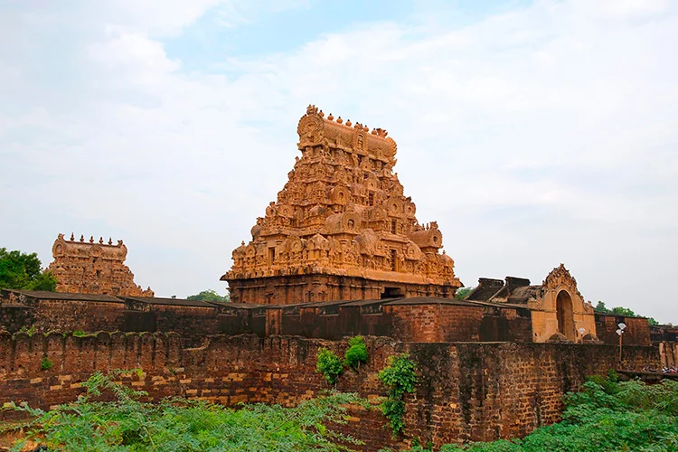
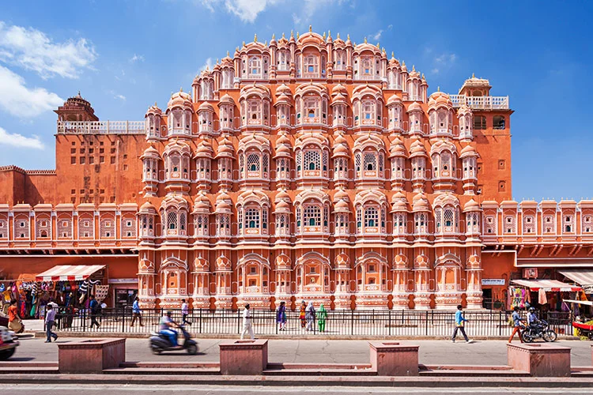
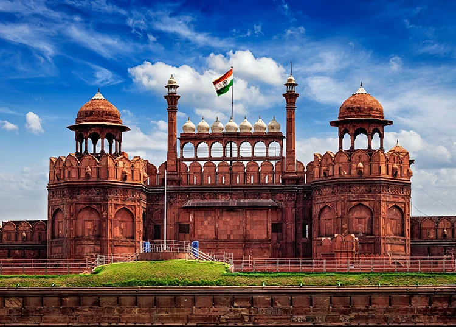
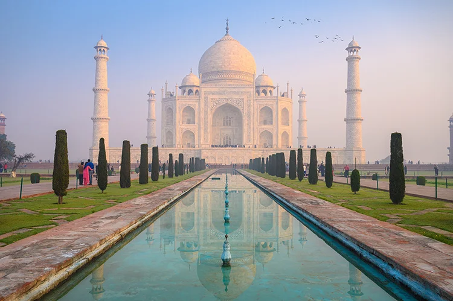

1. Agra Fort

The Agra Fort is one of India’s most impressive and important forts and palaces, close to the Taj Mahal. Primarily intended as a military structure, the Agra Fort is made up of 20 metre high walls with a circumference of 2.5 kilometres. However, the fort was later transformed into a city unto itself expanding into a labyrinth of red sandstone buildings, including a palace, a mosque, homes, halls, and monuments. Incredibly well-preserved, the fort is a UNESCO World Heritage site. In addition to the fort itself, some of the most impressive structures within the Agra Fort complex include the Diwan-i-Am or ‘Hall of Public Audiences’, from which Shah Jahan conducted state business, the 17th century Nagina Masjid or ‘Gem Mosque’, and the mirror encrusted Shish Mahal palace. The Anguri Bagh gardens are also very beautiful, having been extensively restored.
2. Brihadisvara Temple

Inscribed on UNESCO’s World Heritage list, the Brihadisvara Temple of Tanjore is one of several spectacular Hindu temples built by the leaders of the Chola Empire. Built from 1003 to 1010 during the reign of Rajaraja I, the Brihadisvara Temple was constructed in honour of the Hindu deity Shiva (Siva). It is an incredibly ornate and grand primarily granite structure, with seemingly endless sculptures and carvings chronicling the deity’s life as well as that of other holy figures.
3. Hawa Mahal

Hawa Mahal in Jaipur, translated as the Palace of the Winds, was built in 1799 for the Maharaja Sawai Pratap Singh. Constructed of fiery sandstone with an intricate façade that rises into a curve, Hawa Mahal is a striking structure. Indeed, one of the most prominent features of Hawa Mahal is its large lattice of 935 tiny windows. These were built in this way in order to allow the women of Hawa Mahal to look outside whilst being able to maintain their modesty. This was necessary at the time as the women were required to observe a purdah – meaning to remain covered. The interior of Hawa Mahal is far less ostentatious than the outside may imply and in fact some of the levels are very small indeed. Nevertheless, it is worth climbing to the top of the palace for the fantastic views.
4. Red Fort

The Red Fort (Lal Quila) in Delhi was originally built in 1639 by the fifth Emperor of India’s Mughal Dynasty, Shahjahan, when he moved India’s capital from Agra to Delhi. The Red Fort, which derives its name from the red sandstone bricks which make up its protective walls, was built as Shahjahan’s new palace and as a defensive structure. The walls of the Red Fort are an imposing sight, rising up to 33 metres in places, and featuring ornate carvings, domes, and minarets. In addition to the Red Fort itself, the historic Red Fort Complex is made up of palaces, gardens, halls, monuments, mosques, and even another fort, Salimgarh. The Red Fort Complex took almost a decade to complete and covers a staggering 120 acres, at one time holding a population of 3,000 people. Its architecture is considered to be a testament to the creativity of the Mughals, enriched by Persian, European and Indian imagery. The Red Fort Complex consists of numerous impressive structures, including the Diwan-i-Am or Hall of Public Audience, once the home of the royal throne and the private apartments along the Stream of Paradise or ‘Nahr-i-Behisht’, as well as several other palaces and even the Chhatta Chowk, or palace market. All of these are placed within strict geometrical lines within the Red Fort Complex’s distinctive octagonal shape.
5. Taj Mahal
